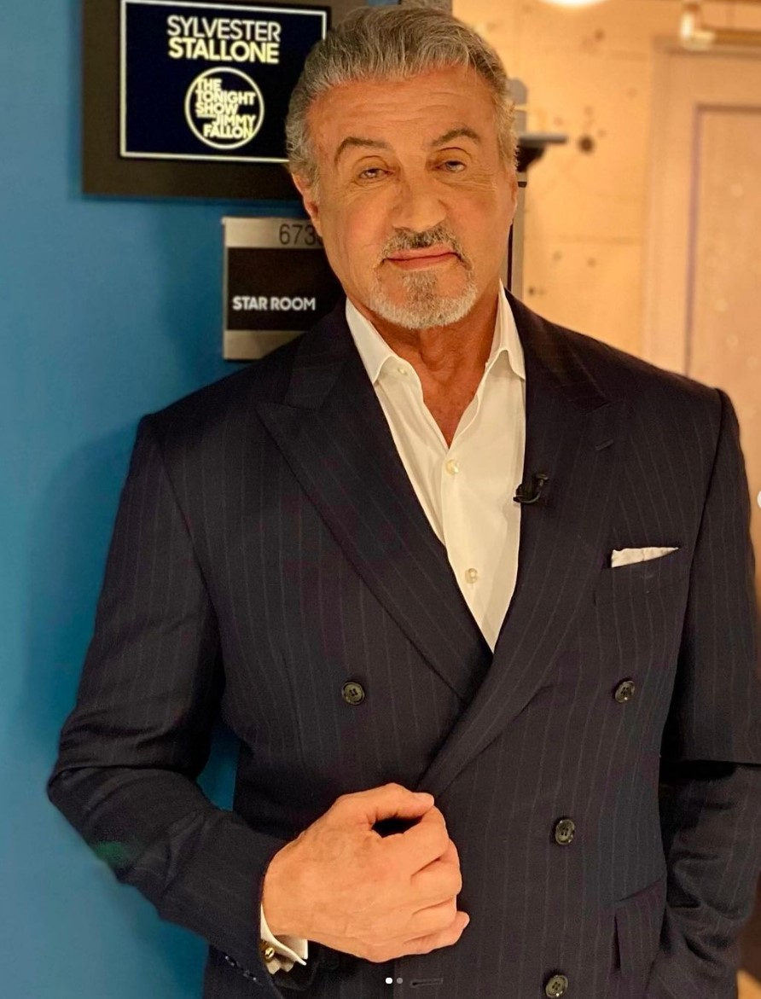

Aktor
Sylvester Stallone

Michael Sylvester Gardenzio Stallone urodził się w 1946 roku w Nowym Jorku.
Zaczynał od statystowania w filmach Alana J. Pakuli ("Klute") i Woody'ego Allena ("Bananas"). Wielką sławę
uzyskał dzięki tytułowej roli w produkcji "Rocky" Johna G. Avildsena. Za kreację jednego z największych
bohaterów kina popularnego Stallone otrzymał dwie nominacje do Oscara - za scenariusz i główną rolę. Kolejne
części przygód Rocky'ego reżyserował już on sam.
Najbardziej znany z takich ról jak:
- Rocky Balboa w filmie "Rocky" 1976 rok
- John Rambo w filmie "Rambo: Pierwsza krew" 1982 rok
- Rocky Balboa w filmie "Rocky 2" 1979 rok (zdobył Kryształową Statuetkę)
- Rocky Balboa w filmie "Creed: Narodziny legendy" 2015 rok (zdobył Złoty Glob)
- Ray Breslin w filmie "Plan ucieczki" 2013 rok
- Źródła:
- https://www.instagram.com/p/Ck1pFw1JOno/ data dostępu: 30 listopada 2022 rok
- https://www.filmweb.pl/person/Sylvester+Stallone-215 data dostępu: 30 listopada 2022 rok